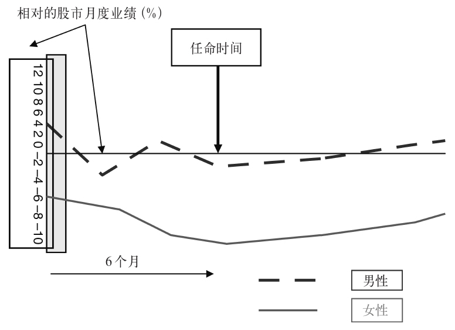
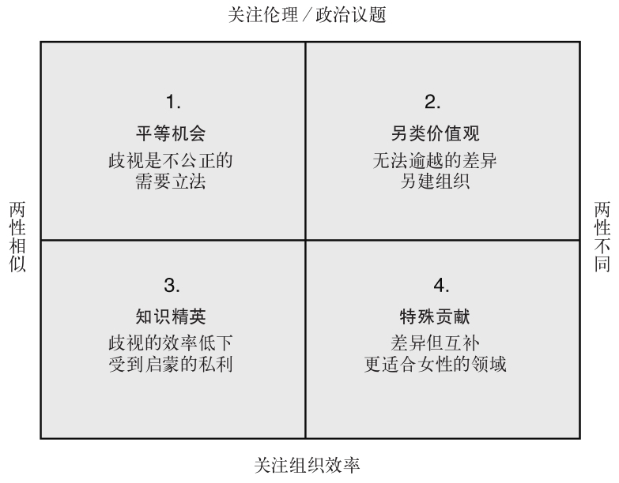
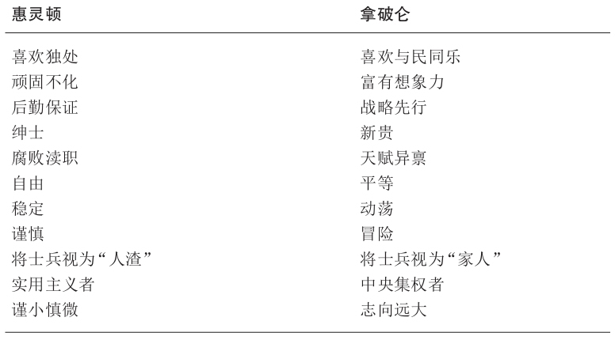

根据格拉德韦尔的说法，美国第29任总统沃伦·哈定也被公认为美国历史上最糟糕的总统。他在任三年一事无成，而且威廉·G.麦卡杜参议员曾说，一般来说，哈定的讲话就是“一大套华而不实的辞藻游移不定地找寻一个落脚的主旨”。哈定离职后，人们发现他在职那几年没少过丑闻和腐败，然而他在任期内却一直颇受欢迎。格拉德韦尔指出，这跟一个普遍存在的倾向有关：人们总是忍不住根据自己对某人的体格和性格的第一印象来判断他有无可能成功。由于哈定是一位高大英俊（T&H [34] ）的原型领导者，又是一个自信（虽不无空洞）的演讲者，人们自然而然地会觉得他能够成就一番伟业，就像我们常常把组织的成功归于个体领导者，但他们通常提不出什么证据表明这一相关性能够真正代表因果关系。事实上，体格和归属判断之间有着很强的相关性。例如，格拉德韦尔自己在对财富500强公司进行分析后发现，大部分CEO都是平均身高稍低于六英尺的白人男性。事实上将近60%的人的身高不低于六英尺，而在其他美国成年男性中，这样身高的比例只占15%。那么我们可不可以首先断定，大部分西方领导者似乎都是高大英俊的白人男性，也就是THWMs [35] 呢？
倒也未必。虽然人们普遍认为身高对领导者所获的评价起到重要作用（越高越好），也确实有不少矮个子领导者。例如，本—古里安 [36] 身高五英尺（1.52米）；亚西尔·阿拉法特、圣雄甘地、金正日、侯赛因国王、尼基塔·赫鲁晓夫和德米特里·梅德韦杰夫都只有五英尺三英寸（1.6米）；而女王伊丽莎白二世、佛朗哥、海尔·塞拉西 [37] 、西尔维奥·贝卢斯科尼、昭和天皇、尼古拉·萨科齐、斯大林、T.E.劳伦斯和霍雷肖·纳尔逊也都不到五英尺六英寸（1.66米）。另一方面，美国一直以来的研究表明，身材较高者的收入也高于身材较矮者——2007年，身高增加一英寸与收入增加1%存在正相关，肤色较浅者的收入也要高于肤色较深者。
尽管如此，重要的女性领导者打破男性主导模式的例子也历来不少。例如在本书撰写期间，联合国192个成员国中就有23位女性国家元首，何况早在公元前3000年就有女王统治埃及了。然而这些往往是例外，而例外的存在，恰恰证明了无论时空如何变换，男性主导始终是基本规则。
那么如今看来，都是些什么样的人物在做领导者呢？卡普兰的分析指向了一个更加脸谱化的模式——CEO们不光是THWM，还是典型的雄性领袖：好斗、高效、坚韧、拥有特权且毫不妥协。这样一来，我们就可以把缩写词改成享有特权、高大英俊的白人男性领袖了，也就是THWαMPs [38] （倒是比THWMs好念一点儿）。然而卡普兰的数据源是私人股权公司的CEO们……看来也就是在我撰写本书期间陷入金融灾难的那个领域。或许这一人格类型能够解释为什么，按照安德鲁·克拉克的说法，在全球最大的保险公司AIG（美国国际集团）接受了美国政府850亿美元防止破产的紧急救助贷款（2008年9月17日）五天后，该公司全体人员竟花费了44万美元在加州的一家顶级海滨度假村休假一周。或者如众议院监督和政府改革委员会主席亨利·韦克斯曼2008年10月8日对时任莱曼兄弟公司CEO的理查德·福尔德所说：“你的公司破产了，我们的经济也陷入危机。但你还有4.8亿美元。我要问一个最基本的问题：这公平吗？”第二天，AIG又收到了美国政府378亿美元的追加贷款；那一定又是一场盛大狂欢。事实上狂欢一定至今未停：1999年，英国CEO与员工的收入平均比例从47倍上升到128倍，利洁时公司CEO巴特·贝希特高居榜首，达到了1374倍（贝希特2008年的收入为3700万英镑，而这家总部位于斯劳的跨国公司的雇员平均收入为26700英镑——相当于英国的平均水平）。贝希特倒也不必担心自己木秀于林：2007/2008年度，富时100公司中前25家公司的董事平均收入均超过了1000万英镑（数据引自《卫报》）。
所以我们这里真正需要关心的不是公平与否的问题，提出公平问题的言外之意可能是，与公司资源相比，平等对待追随者才是领导者成功的要诀。那显然不是事实。历史上残忍暴力、奴役剥削以及许多其他“不公平的”领导者通过狰狞恶毒的行为获得成功的例子比比皆是。或许论证要从两个方面来进行。第一，只有在与公平有着文化关联的情境下，公平才是评价领导者是否合适的一个标准。在危机时期，例如在战时，大多数追随者大概会觉得生存比公平更重要。然而2008年10月，当全球股市遭遇金融危机时，以前人们关于公司成功比公平重要的论断发生了逆转，美国国会之所以迟迟通不过救市方案，原因之一就是因为人们认为这不公平——不该偏向据称不惜损害纳税人利益的肇事方，即银行家，还指望纳税人替银行家们自己犯下的错误买单。第二，回到本书第二章的论点，我们或许能够看到，有效的领导类型取决于（1）当前提出要求的局势如何，以及（2）某些领导者在架构和重构局势时有多大的说服力，以便在呼吁多方采纳他们本人提议的行动时，起到一呼百应的效果。
在许多国家，公平往往跟多样性有关，而就在大多数这类国家中，顶层精英多样性水平的标志又往往是——多样性。例如，《观察家报》2008年10月进行的一次民意调查要选出英国100位最有影响力的黑人，评选委员会看似避免了老套的提名程序，以防名单里充斥着黑人歌星和体育明星。相反，评选的依据是他们的“影响力”，其定义是：“改变事件走向和改善人们生活的能力。”男性中排名最高的是穆罕默德·易卜拉欣博士，这位创业企业家为将手机引入非洲做出了无可匹敌的贡献。而女性中排名最高的是斯科特兰女男爵，她在学校期间，曾有一位职业发展顾问跟她说，她职业生涯的顶峰差不多就是当上森宝利公司的主管。她后来成为英国第一位担任王室法律顾问的黑人女性，2007年又成为第一位女性总检察长。正如在该名单男性中排名第五位的英国平等及人权委员会主席特雷弗·菲利普斯所说：
在当前由巴拉克·奥巴马主掌白宫的美国，2008年有色人种占总人口的三分之一，或34%。但谈到最高职位的政府官员的比例，比如国会议员，只有15%是非裔、拉丁裔、亚裔美国人或印第安人，只有24%是女性。非营利组织的情况也大同小异，84%的非营利组织是由白人领导的。此外42%的非营利组织只为白人社区提供服务。过去我们受到的教育让我们以为，这个问题事实上最好以历史视角来看待——显而易见，西方领导者过去一直是白人男性，但这一点正在发生改变，虽然改变的速度很慢，但在不久的将来，我们定能看到管理精英群体的组成体现出更大的多样性。但这并非不言自明的事实。
合作资产管理机构2009年进行的调查表明，富时350公司中只有3%的公司CEO为女性（只有四家公司的董事长为女性，占1.3%），有130家公司的董事会层级没有女性。的确，女性在董事会席位中的比例只有9%，但这不可能是因为缺少平等机会政策，因为94%的公司都出台了这类政策。2008年，女性在300家顶级欧洲公司中所占的董事会席位只有不到10%，但过去几年我们看到这个数字有少量增加，不是因为多样性政策的稳步推行，而是另有原因；举例来说，挪威的公司（自2003年起）有立法要求，法律规定每个公司的董事会必须有至少一名女性成员。事实上，挪威目前正在所有上市公司中推行40%的最低目标。斯堪的纳维亚国家在性别平等运动中领先，但欧洲其他国家还有一定的差距。
在美国，专业和管理岗位中有一半是女性，但在这句肯定性别平等的笼统陈述背后，可以看到一个熟悉的规律：女性往往在慈善组织和公共部门中的代表性更高，而考察的级别越高，能够看到的女性就越少。例如，财富500强公司中只有15位女性CEO。
当然，大多数公司董事会的女性人数不足与其说源自男性的偏见，倒不如说与这样一个严峻的事实有关：女性在董事会中所占比例与公司的财务表现偏弱之间存在相关性。这的确有可能是因为男性更胜任会计工作——不过我很怀疑这种说法——然而不管有多少家会计公司（英国的会计人员数目大大超过其他主要竞争对手；美国的律师数目也远超别国），它们似乎都没能帮助许多公司在2008年的金融危机中绝处逢生。相反，我们应该关注“相关性”这个词，把它与“因果关系”区分开来，因为在这里，因果的方向至关重要，如图14所示。

图14 董事会中的女性与公司业绩
此图表明，相对于男性获得任命的一般情况而言，只有现状糟糕得多时，女性才会获得任命——这就意味着女性面临的任务要艰难得多，也意味着我们可以在较差的业绩与女性之间建立相关性——但事实是业绩差导致了女性得到任命，而不是相反。的确，就任命之后的公司业绩而言，许多研究都表明，男性和女性的差别微乎其微，但也有些研究表明性别多样性与业绩提升之间存在正相关——至少当董事会中的女性能够胜任时是如此；而基奥恩还提到，由于过去数千年来女性一直受到排斥，关于领导者，她们会提出一套全然不同的问题。
我们该怎样应对领导者群体缺乏多样性的问题呢？说起来，那要取决于你站在什么立场上。如果你就是一位希望保持现状的THWαMP，那么显然没什么可应对的。但如果你觉得有必要做出改变，那么还取决于你认为问题的根源是什么。图15再现了阿尔韦松和比林对性别不平衡问题的分类法。方框1代表认为两性没有差别，且出于伦理原因，应该改变现状的人。这往往会引发立法变革，如前文提到的挪威政府的立法。方框2持同一种伦理观，但认为两性存在着根本差异，因此立法变革不会产生什么成果。真正的解决方案应该是让女性创建另一类组织，的确，由于有些女性认识到在传统的男性主导的组织中，那层玻璃天花板无法突破，近年来由女性创立的新企业的数目确实看似有所增加。方框3认为两性基本上没有差异，但采取了一种效率而非伦理态度，认为既然如此，就应该采纳知识精英领导的做法，以免“浪费”女性的天分。最后的方框4是一种倾向于效率的态度，但认定两性存在差异，且关注女性如何能够为组织做出“特殊贡献”。

图15 性别：因与果
现在关键是要认识到，问题的解读与解决方案之间存在联系，因为它解释了为什么人们会提出不同的变革策略，以及如果这些策略失败了，为什么反对者会试图重新架构问题，将其归于不同的类别。事实上，我们不认为男性和女性之间存在很大差异，因为两性在一般的智商测试中的结果，以及性格特质，都没有明显差异，甚至西欧和北美的女性往往还比其男性对手的成绩更好。至于该如何解释业绩差异，似乎最重要的因素其实是不对称的家务负担、性别歧视以及先入为主的性别设定等现实原因，还有男性建立的工作网络较强，更能确保其获得更有挑战性的职位并取得更好的业绩。实际上，人们认为女性（其社交网络往往强于男性）作为领导者要比男性更有同情心——如果真是如此，这一行为特征又被认为没有男性领导者被普遍认为所具备的积极进取特征那么有力。当然，有些女性领导者也会采纳一种更有冲劲的风格，但这些行为往往又被看作“不得体”。无论如何，女性在取得成功的路上总要面对各种各样的困难和障碍。
当然，这也给了有些人足够的理由在事后宣称“我说的没错吧”，因为我们似乎总是在顷刻之间做出关于领导者及其战略的决定，因此如果支持他们而他们后来又成功了，对呀，我们早就知道的嘛。而如果他们失败了，那就一定是情况发生了变化，一定有人搞破坏，或者其他什么借口。这倒也不新鲜。已经有不少证据表明，对领导者做出即刻判断（不管正面还是负面）非常普遍。美国军队在第一次世界大战期间选拔军官的根据也是同样的套路：被认为有吸引人的特质——要么是无可辩驳的THWαMP类，要么只不过有“开朗可爱的性格”——的申请者被认定为更聪明、更勇敢也更（得体地）积极进取。或者正如爱德华·李·桑代克 [39] 所说，一见之下就会产生“光环效应”（或者说那些魅力稍逊的应征者有“魔鬼效应”），这扭曲了人们关于其整体性格和潜力的推断。
不妨考察一下如何将胜任素质模型套入上述情形。许多胜任素质模型的架构都建立在对现有领导者的胜任素质进行分析的基础之上，然后再把它们精炼成一目了然的清单，再围绕所需的胜任素质框架制定聘用方法。但看看这个过程吧：它利用现有的一群领导者，把他们的成功归于据称对成功起到重要作用的胜任素质。你八成已经看出来这里面有循环论证的嫌疑了吧，没错。真正需要做的，是把成功和不成功的领导者群体，或领导者和追随者群体进行比较，看看（成功的）领导者有哪些不同之处，再去追溯其与成功之间有无因果联系。否则，我们就不知道我们得到的是相关性还是原因。正如我们已经看到的，身为THWαMP可能与成功的组织相关，这当然可能是因为身为THWαMP是成功组织的前提条件，但也同样有可能是因为成功的组织只会雇用THWαMP。所以，我们须有十足的把握确信现有的胜任素质框架的确是成功（或失败）的原因，否则就要十分警醒，尽量不要采取这一途径。
如果已经有了能够反映人口构成的非常多样化的领导群体，就无须担心这个问题了——那就意味着多样化的组织将不断复制各自的偏见，因此多样性还会继续，但不会发生改变。不过，既然组织往往是由THWαMP领导的，我们可能还会看到下一代领导者中出现更多的THWαMP。这只是按照自己的形象进行选择，还是另有原因？
如果考察一下社会认同理论的功用，或许能对另一种解释略窥一二。这一观点认为，我们一贯倾向于把其他人归为有利和不利这两大类，前者是因为他们支持我们自己的身份认同，后者则是因为他们被认为是异类。这种身份认同过程在个人和群体层面都存在，因此在某些特定情况下，我们会把某些个人看作是群体的代表，而不是独一无二的人。的确，个人身份“我”不可能离开社会身份“我们”而独立存在。该理论继而指出，一旦被归类，我们会认为内集团（我们）内部的差异要小于内集团和外集团（他们）之间的差异。此外，内集团的规范和套路（多半是有利的）会产生特定的对比标准，来确保自我提升。例如，住在破烂廉价公寓里的年轻姑娘们有可能会觉得超模们也不比自己强到哪儿去，而且根本无法在这样艰难的环境中生存下去——这样一来，该对比标准就重建了姑娘们自我提升的社会身份。
另外，整个过程产生了能够效法群体社会身份的原型 并导致其成员丧失个性 ，他们因为看上去如此相似而可以互换：我们定能就与集团有关的事务达成一致，我们往往会支持新制定的集团规范，我们还认为群体的利益高于自己的个人利益。结果，“我们”认为自己都具备那些正面的属性，因而我们都一样，而对“他们”都持负面看法，在这一点上，“他们”基本上也没有区别。这有助于让我们对自身、对当前现状和自己可能的行为不至于那么没有把握，对“他们”也是一样。
这样的原型很少被如此明确地表达出来，因此无法指望人们把它们写成众人一致首肯的清单；何况时过境迁，随着情况发生变化，它们也会改变，如果群体成员身份变得更重要了——往往是在外来威胁面前，它们的重要性也会增加。对领导力而言，其后果是那些最接近群体原型的成员有可能最有影响力——只要情况保持不变，他们就会成为领导者并一直担任要职。既然这一影响力与原型而不是个人有关（虽然群体成员不这么看），那就意味着一旦情况发生变化，就会产生新的原型，而这又解释了为什么原型偶像会突然丧失影响力。例如在1930年代，很多英国人认为丘吉尔是个危险好战的特立独行者，但当英国遭遇威胁时，他就成了自我认知的原型人物的完美代表——一个在危险面前坚韧不拔的勇敢的英国人，因此他变得很受欢迎，很快便官至首相。然而战争一结束，他的性格——并没有改变——又被认为不符合战后世界领导者的要求了。对于战后英国来说，性格更加温和包容的克莱门特·艾德礼才是符合需要的原型领导者。
因此，原型性取决于情境的稳定性，尽管如第二章所述，任何领导者都可以将架构和重新架构“情境”作为自己的武器。不过，领导者们还是可以利用以下几种强化原型模式的技巧来延长自己对局面的控制：
这样一来，该领导者就有可能成为内集团的原型：
2009年6月发生在伊朗的暴乱是很好的例子，表明这种观念如何解读领导者在受到胁迫时所做的决策。这还解释了在面对压力时，为什么“群体思维”（群体压制内部异见人士的倾向）在各个群体内部都能占得上风，以及为什么在较为稳定的组织和机构，少数派、非原型个人和群体很难突进领导岗位。
并非不可能，而是很难。事实上，当危机爆发时，原型领导者的地位通常得到了强化。例如，2008年夏，当戈登·布朗力图为后布莱尔时代的工党展示另一种愿景时，他作为英国首相的地位受到了严重威胁。但2008年秋金融危机一爆发，工党内部立即团结起来，寻找一个在金融危机时期最能满足要求的原型人物并寻求其保护，所有要替代他的想法都被抛弃了——当时最合适的人选无疑是戈登·布朗，这位前财政大臣的脸上始终都是一副严厉、负责而认真的表情。然而讽刺的是，九个月后，当议会内部报销丑闻爆发，同一位英国首相再次面临强烈反对时，他却未能履行财政“巫师猎手”的使命，因此当人们的不确定性减弱，便纷纷寻找替罪羊，解决方案当然是把所有的罪责都推到一个领导者——戈登·布朗身上。
但原型领导者的成功不只依赖于说服“我们”，让我们相信我们不同于且优于“他们”，也在于说服“我”和“你”成为“我们”。幸运的是，那对领导者们而言倒是不难，因为它并不依赖于对“事实”的理性分析，而是依据人们情绪化的且往往是无意识的反应。事实上，所要做的不过是本尼迪克特·安德森 [40] 所谓的“一点想象力”。他的意思是，既然我们永远不可能知道其他人到底像“我们”还是像“他们”，只需想象一种情形即可。这样一来，第一次世界大战战壕两侧的士兵们无论是在生活质量、收入、习惯还是其他方面，彼此之间都要比跟各自的领导者更接近一些，这一点就没那么重要了。真正重要的是“他们”显然跟“我们”截然不同，而那就把“你”和“我”变成了“我们”，其凝聚力足以让我们愿意与“他们”作战。
在英国和法国国家身份的建立中，这一点都发挥了重要作用，因为有足够的理由表明，革命的法国军队在拿破仑的带领下与惠灵顿麾下的英军作战之前，大多数英国国内的人会认为自己是英格兰、苏格兰、威尔士或爱尔兰人——而不是英国人。同样，“法国人”或许觉得自己是布列塔尼人、诺曼底人或者各自故乡随便什么地方的人——而不是法国人（确实如此，当时法国境内的大多数人不说法语，而是说某种地区方言）。然而，那场战争导致两个国家彼此敌对，冲突促使拿破仑和惠灵顿走上了领导岗位，不仅成为作战将军，而且成为各自“新生”国家的原型人物。因此，我们在阅读那段时期的文献时，会看到两位原型领导者代表各自的国家展开了相互竞争。人们不认为拿破仑和惠灵顿是两个同样位居高位的个人，而把他们看成是两个死对头国家的代表人物——这两个国家正是在战争的严峻考验下形成的。以下形容性格特征的词汇表说明了这两个人和国家是如何逐渐被认定为敌对双方的。

最后让我们回过头来重新考察本章开头提出的问题。在本章开头，我们讨论了沃伦·哈定是一个颇受欢迎但效率很低的领导者，以及产生光环的第一印象会让我们对领导者的解读发生偏差。那就意味着我们需要对微观领导的议题非常小心才是。这是指我们或许太过关注领导力的理性方面——愿景、政策、领导者的经验——而不够关注领导行为的情感层面，即人们如何诠释很小的行为、话语、眼神、身体语言等等。当然，关于情商的著述堆积如山，对情商一词的解释也千差万别，但我们应该意识到，情商高的人并不比情商不高的人在道德上更优越。例如，希特勒就是操纵他人情感的高手，但这可没让他在客观上变得道德。何况正是因为情感是非常有力的动员因素，我们才应该对其重要性加以限制——毕竟，那是我们为什么要生活在一个法律体系内，而不是任由某个暴君凭借自己的喜怒操纵我们的原因所在，对所有不喜欢暴君的人来说，他的情商再高，也只能是负资产。然而我们还是更喜欢那些能够记住我们的名字、能让我们感觉更亲切的领导者，而不喜欢那些连屈尊说一句“你好”都不肯，却有一套精细的政策来应对这个我们根本不懂的复杂世界的领导者。的确，他们一点儿都不像“我们”；他们更像“他们”。